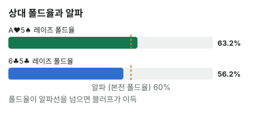

안녕하세요. E01에서 A♥ 한 장이 상대의 넛 플러시를 통째로 지우는 걸 봤죠. 그때는 콜하는 쪽에서 블로커를 셌어요. 오늘은 반대로 블러프하는 쪽에서 셉니다.
리버에 드로우가 빗나갔는데 손에 A♥가 있어요. "넛 블로커 있으니까 크게 한 방" 하고 싶어지는 장면이죠. 이 느낌이 정말 맞는지, 같은 상대에게 블로커가 있을 때와 없을 때를 나란히 놓고 계산해 볼게요.
이 글에서 배울 것
- 블러프 본전 폴드율(알파)이 왜 "건 돈 ÷ (팟 + 건 돈)"인지 직접 따져 보는 법
- 블러프할 때 블로커가 지워야 하는 건 상대가 콜할 핸드라는 것, 그리고 그 효과를 콤보로 세는 법
- 블로커는 "넛 블로커" 같은 이름이 아니라 콜 묶음에서 지우는 콤보 수로 본다는 것
오늘의 핸드
Hero (BTN · 스택 100BB)


프리플랍
Hero 2.5BB 오픈 → 상대(BB) 콜
팟 5.5BB
플랍 · 팟 5.5BB


상대 체크 → Hero 2.75BB 벳 → 상대 콜
하트 석 장(모노톤) 보드예요. Hero는 A♥ 한 장으로 하트가 하나만 더 오면 넛 플러시가 되는 드로우예요.
턴 · 팟 11BB


상대 체크 → Hero 4.5BB 벳 → 상대 콜
팟은 11 + 4.5 + 4.5 = 20BB가 돼요.
리버 · 팟 20BB


상대 체크 → Hero는 30BB(팟의 1.5배) 오버벳 블러프를 할까?
드로우가 빗나가 Hero는 A 하이예요. 대신 손에 A♥(넛 플러시 블로커)가 남아 있어요.
결론부터 말할게요. 오늘 가정한 상대라면 A♥5♠로는 블러프가 한 번에 약 +1.58BB로 이득이고, 같은 상대에게 블로커가 없는 6♣5♣로는 약 −1.9BB로 손해입니다.
같은 보드, 같은 상대, 같은 벳인데 결론이 갈렸어요. 차이는 손에 든 카드 한 장뿐이에요. 왜 그런지 4단계로 볼게요.
1단계. 몇 번 접어야 본전인가 (알파)
한 줄 정의
알파 = 블러프가 본전이 되려면 상대가 접어야 하는 비율이에요(A01에서 배웠죠).
다섯 번 걸어 보면 보여요
Hero는 30BB를 걸어서 팟 20BB를 노려요. 이 블러프를 5번 한다고 해 볼게요.
- 상대가 3번 폴드: 한 번에 20BB씩 → 60BB 벌어요
- 상대가 2번 콜: Hero는 A 하이라 지고, 한 번에 30BB씩 → 60BB 잃어요
번 돈과 잃은 돈이 같아요. 그래서 이 블러프는 5번 중 3번 접으면 본전이에요.
알파 = 30(Hero 벳) ÷ (20(팟) + 30(Hero 벳)) = 30 ÷ 50 = 60%
이게 무슨 뜻이냐면
알파는 "내가 거는 돈"과 "가져올 팟"의 비율로만 정해져요. Hero 핸드가 뭐든, 상대가 뭘 들었든 상관없어요. 벳을 크게 할수록 위험한 돈이 커지니 상대가 더 자주 접어야 해요.
그러면 남은 질문은 하나예요. 이 상대는 실제로 몇 % 접을까? 여기서 블로커가 등장해요.
2단계. 상대가 리버에 체크한 핸드 (가정 레인지 기준)
상대가 플랍·턴을 콜하고 리버에 체크한 핸드를 이렇게 가정할게요. 그리고 오늘은 상대가 레이즈 없이 콜 아니면 폴드만 한다고 볼게요(넛 플러시도 콜로 봄).
| 묶음 | 핸드 | 오버벳에 |
|---|---|---|
| 플러시 | A♥Q♥·A♥J♥·A♥T♥·A♥8♥·A♥6♥·A♥5♥·A♥3♥, Q♥J♥·J♥T♥·T♥8♥ | 콜 |
| 좋은 K | KQo, KJo | 콜 |
| 키커 약한 K·9 페어 | KTo(K 탑페어, 약한 키커), 98o·T9o·J9o(9 페어) | 폴드 |
KJo는 콜하고 KTo는 접는다고 나눈 것도 가정이에요. 오버벳 앞에서 J 키커와 T 키커가 잡는 블러프는 거의 같아서, 상대에 따라 KTo도 콜할 수 있어요.
체크하면 Hero는 0BB
이 레인지는 전부 페어 이상이에요. A 하이로 쇼다운하면 Hero는 늘 져요. 그래서 체크하면 Hero는 이 팟에서 더 벌지도 잃지도 않는 0BB예요. 블러프의 손익은 이 0BB와 비교하면 돼요.
3단계. 블로커를 지우고 세기
블로커가 없는 6♣5♣
6♣5♣는 상대 레인지 어디에도 안 쓰이는 카드예요. 그래서 아무것도 안 지워요.
- 플러시(콜): 10콤보
- 좋은 K(콜): KQo·KJo가 9가지씩 18콤보
- 키커 약한 K·9 페어(폴드): KTo·98o·T9o·J9o가 9가지씩 36콤보
KQo가 9가지인 이유: K는 보드에 K♥가 있어서 3장 남았고, Q는 4장이라 3 × 4 = 12. 그중 같은 무늬 3가지(K♠Q♠·K♦Q♦·K♣Q♣)는 오프수트(o)가 아니니 빼면 9예요.
폴드율 = 36 ÷ (10 + 18 + 36) = 36 ÷ 64 = 56.25%
A♥를 쥔 A♥5♠
A♥가 Hero 손에 있으면 상대 플러시 중 A♥가 들어간 7콤보가 사라져요. 남는 건 Q♥J♥·J♥T♥·T♥8♥ 3콤보뿐이에요. 좋은 K와 폴드 묶음은 A♥와 상관없어 그대로예요.
폴드율 = 36 ÷ (3 + 18 + 36) = 36 ÷ 57 = 63.2%
| A♥5♠를 들 때 | 6♣5♣를 들 때 | |
|---|---|---|
| 플러시(콜) | 3콤보 | 10콤보 |
| 좋은 K(콜) | 18콤보 | 18콤보 |
| 키커 약한 K·9 페어(폴드) | 36콤보 | 36콤보 |
| 폴드율 | 63.2% | 56.25% |
💡 빨리 세는 팁: A♥를 쥐면 A♥x♥ 플러시는 전부 사라져요. 오늘 레인지에선 그게 7콤보

4단계. 폴드율 vs 알파, 그리고 돈
비교
- A♥5♠: 폴드율 63.2% > 알파 60% → 이득
- 6♣5♣: 폴드율 56.25% < 알파 60% → 손해
19번 블러프해 보면
A♥5♠일 때 상대 레인지는 3 + 18 + 36 = 57가지예요. 57과 36이 모두 3으로 나눠지니 3가지씩 묶으면 19묶음, 그중 폴드가 12묶음(36콤보), 콜이 7묶음이에요. 19번 블러프하면 12번은 20BB를 벌고 7번은 30BB를 잃는 셈이죠.
12번 × 20 = 240BB 벌고, 7번 × 30 = 210BB 잃어서 19번 합계 +30BB
한 번에 평균으로 바꾸면 이래요. 0.63158은 3단계 폴드율 36 ÷ 57, 0.5625는 36 ÷ 64예요.
A♥5♠: 0.63158 × 20 − 0.36842 × 30 = 12.63 − 11.05 = 약 +1.58BB
6♣5♣: 0.5625 × 20 − 0.4375 × 30 = 11.25 − 13.125 = 약 −1.9BB
이게 무슨 뜻이냐면
블로커 하나로 결론이 뒤집혔어요. 그런데 결론을 낸 건 블로커가 아니라 폴드율 vs 알파예요. 블로커는 그 폴드율을 정확히 세게 해 줬을 뿐이에요.
왜 그럴까: 블러프의 블로커는 "상대가 콜할 핸드"를 지워야 해요
E01과 자리만 바뀌었어요
E01에서 콜하는 쪽은 상대의 밸류를 지우면 좋았죠. 블러프하는 쪽도 똑같아요. 두 경우 모두 상대의 센 쪽을 지우면 좋아요. 바뀐 건 Hero의 자리(콜하는 쪽 → 거는 쪽)와, 상대 레인지를 나누는 기준(밸류·블러프 → 콜·폴드)뿐이에요.
- 내 카드가 콜할 핸드를 지우면: 분모만 줄어 폴드율이 올라가요 → 블러프에 좋음
- 내 카드가 폴드할 핸드를 지우면: 접어 줄 상대가 줄어 폴드율이 내려가요 → 블러프에 나쁨
A♥는 오늘 콜 묶음에서 7콤보를 지우고 폴드 묶음은 하나도 안 건드렸어요. 블러프용 블로커로서는 가장 이상적인 모양이에요.
왜 하필 A♥가 그렇게 셀까
오늘 가정 레인지에서 플러시 10콤보 중 7콤보가 A♥를 써요. 상대가 A♥ 수딧 핸드를 넓게 들고 온다고 가정했기 때문이에요. 이렇게 콜 묶음의 큰 덩어리가 카드 한 장에 몰려 있으면, 그 한 장을 쥐는 효과가 커져요.
상대가 A♥x♥를 덜 들고 오는 상대라면, 같은 A♥라도 지우는 콤보가 줄어 효과도 작아져요. 블로커의 힘은 카드 이름이 아니라 상대 레인지가 그 카드에 얼마나 몰려 있느냐에서 나와요.
블로커는 "넛을 지운다"보다 "콜 묶음을 지운다"로
"넛 블로커"라는 이름 때문에 넛을 지워서 좋은 것처럼 들리지만, 정확히는 콜할 핸드를 지워서 좋은 거예요. 오늘은 넛 플러시가 콜 묶음에 들어 있었으니 A♥가 그 일을 한 거고요.
그래서 하트가 아닌 카드도 블러프용 블로커가 될 수 있어요. 오늘 콜 묶음에는 플러시만 있는 게 아니라 KQo·KJo도 있으니까요. 이 차이는 연습 문제에서 직접 세어 봐요.
자주 하는 실수
실수 1. "넛 블로커 있으니 무조건 블러프" A♥를 쥐어도 상대에게 좋은 K 18콤보와 플러시 3콤보, 합쳐서 3 + 18 = 21가지 콜 핸드가 남아요. 폴드율 63.2%는 알파 60%를 겨우 넘었을 뿐이에요. 대신 넛 블로커를 쥐었을 때도 남은 콜 묶음부터 세요.
실수 2. 블로커만 세고 알파는 안 보기 6♣5♣와 A♥5♠의 폴드율은 56.25%와 63.2%예요. 이 차이가 결론을 바꾼 건 기준선 알파가 마침 60%로 그 사이에 있었기 때문이에요. 블로커 효과가 크든 작든, 그게 결론을 바꾸는지는 기준선이 어디 있느냐로 정해져요. 대신 알파를 먼저 구해 두고 블로커 효과가 그 선을 넘기는지 봐요.
실수 3. 빗나간 드로우면 다 같은 블러프 후보로 보기 같은 보드에서 Hero가 T♠8♠(6이나 J를 기다리던 스트레이트 드로우)로 리버를 맞았다고 해 볼게요. A♥5♠처럼 빗나간 드로우지만, T♠는 상대가 접어 줄 KTo·T9o를, 8♠는 98o를 지워요. 콜 묶음은 하나도 못 지우고 폴드 묶음만 깎는 블로커예요. 대신 블러프 후보가 여럿이면 어느 핸드가 콜 묶음을 지우고 폴드 묶음을 남기나로 골라요.
"A 하이도 쇼다운 가치가 있지 않아요?"
좋은 질문이에요. 오늘 체크가 0BB인 건 상대 레인지를 전부 페어 이상으로 가정했기 때문이에요. 상대 레인지에 A 하이로 이길 수 있는 핸드(예: Q 하이로 빗나간 드로우)가 섞여 있다면, 체크했을 때도 Hero가 돈을 벌어요.
그때는 블러프 손익을 0이 아니라 체크 손익과 비교해야 해요. 블러프하면 그 Q 하이는 어차피 접으니, 체크로 이길 수 있던 팟을 블러프로 이기는 것뿐이라 이득이 줄어요.
숫자가 뒤집히는 지점
알파 60%를 콤보로 바꾸면 "폴드 3 : 콜 2"예요. 오늘 폴드 묶음이 36콤보이니, 콜 묶음이 36 × 2 ÷ 3 = 24콤보 이하면 이득이에요.
- A♥5♠: 콜 묶음 3 + 18 = 21 → 경계 24 아래라 이득
- 6♣5♣: 콜 묶음 10 + 18 = 28 → 경계 24 위라 손해
블로커는 이 콜 묶음을 깎는 일을 하고, 경계는 벳 크기와 폴드 묶음이 정해요.
선생님의 한마디
리버에 드로우가 빗나가 블러프를 고민할 때는 이 순서로 봐요.
- 벳 크기로 알파부터 구하기
- 상대 체크 레인지를 콜 묶음·폴드 묶음으로 나누고, 내 두 장을 지운 뒤 세기
- 블러프 후보가 여럿이면, 콜 묶음을 지우고 폴드 묶음을 남기는 핸드부터 고르기
연습 문제 (같은 보드, 같은 상대 가정)
학습툴에는 알파를 직접 넣는 칸이 없어요. 홀덤학습 팟 오즈 퀴즈 Lv.5(블러프 본전)로 같은 계산을 연습해 보세요.
문제 1. 벳을 20BB(팟벳)로 줄이면 두 핸드(A♥5♠·6♣5♣)의 블러프 손익은 각각 얼마일까요? 상대의 콜·폴드 묶음은 오버벳 때와 같다고 볼게요.
정답 보기
알파 = 20 ÷ (20 + 20) = 50%. 두 핸드 모두 폴드율이 50%보다 높아 이득이에요.
- A♥5♠: 0.63158 × 20 − 0.36842 × 20 = 12.63 − 7.37 = 약 +5.26BB
- 6♣5♣: 0.5625 × 20 − 0.4375 × 20 = 11.25 − 8.75 = +2.5BB
문제 2. 오버벳 30BB는 그대로인데, Hero가 A♥5♠ 대신 Q♥5♠(같은 하트 한 장)를 들었다면? 상대 콜·폴드 콤보를 다시 세고 블러프 손익을 구해 보세요.
정답 보기
Q♥는 플러시 중 A♥Q♥·Q♥J♥ 두 가지만 지워 플러시가 8콤보 남아요. 그런데 Q♥는 KQo도 지워요. K 3장 × Q 3장 = 9에서 같은 무늬 3가지를 빼 KQo가 6, KJo 9와 합쳐 좋은 K는 15콤보예요. 폴드율 = 36 ÷ (8 + 15 + 36) = 36 ÷ 59 = 61% > 알파 60% → 겨우 이득, 한 번에 약 +0.51BB예요. 같은 하트라도 A♥는 플러시 7콤보를, Q♥는 플러시 두 가지와 KQo 세 가지를 지웠어요. 블로커는 이름이 아니라 콜 묶음에서 몇 콤보를 지우나로 봐요.
문제 3. A♥5♠로 30BB 오버벳인데, 이 상대는 KTo까지 콜한다면?
정답 보기
콜은 K 페어 27콤보(KQo·KJo·KTo) + 플러시 3콤보, 폴드는 98o·T9o·J9o 27콤보 → 폴드율 = 27 ÷ 57 = 47.4% < 알파 60% → 손해. 손익 = 0.47368 × 20 − 0.52632 × 30 = 9.47 − 15.79 = 약 −6.32BB. 블로커가 있어도 상대가 넓게 콜하면 블러프를 쉬어요.
핵심 정리
- 블러프 본전 폴드율 알파 = 거는 돈 ÷ (팟 + 거는 돈). 벳 크기만으로 정해져요
- 블러프할 때 좋은 블로커는 상대가 콜할 핸드를 지우는 카드, 나쁜 블로커는 접어 줄 핸드를 지우는 카드예요
- "넛 블로커"가 센 건 넛이라서가 아니라, 넛이 콜 묶음의 큰 덩어리였기 때문이에요
- 알파는 "폴드 : 콜" 콤보 비율로 바꿔 볼 수 있어요. 알파 60%면 폴드 3 : 콜 2
정리하며
오늘은 모노톤 보드에서 넛 플러시 드로우가 빗나간 리버에 30BB 오버벳 블러프를 계산했어요.
알파 60%를 먼저 구하고, A♥가 상대 플러시 7콤보를 지워 폴드율을 56.25%에서 63.2%로 올리는 걸 셌어요. 그 차이가 마침 60% 선을 넘어서, 같은 상대에게 A♥5♠는 이득이고 6♣5♣는 손해였죠.
오늘 하나만 가져가면 돼요. 블러프 전에 "내 카드가 상대의 콜 묶음을 몇 콤보 지우나"를 세고, 그 폴드율을 알파와 비교하세요.
다음 글 E03에서는 다시 콜하는 쪽으로 돌아가요. 같은 K-T 블러프캐처인데 T의 무늬 하나 때문에 콜과 폴드가 갈리는 장면을, 핸드마다 콜 손익을 비교하며 봐요.
AI 작성 · 숫자는 계산 검증 (콤보는 실제 카드로 하나씩 셈) · 가정 레인지 기준 (솔버 결과 아님) · 상대는 레이즈 없이 콜·폴드만 한다고 가정 · 리버 마지막 결정(콜 받으면 Hero가 짐)